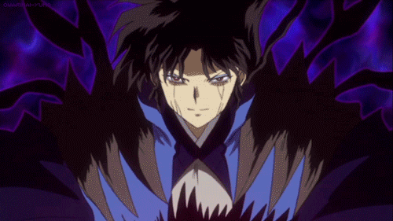

Naraku (Inuyasha)

Naraku is a character from the anime series Inuyasha. He is a powerful demon who serves as the main antagonist of the series, using his cunning and manipulative nature to achieve his goals. Naraku is a complex character with a tragic past, driven by a desire for power and control over the world. He is a formidable opponent, capable of taking on multiple enemies at once and using his immense power to crush his foes.
Back to Main
Back to Top